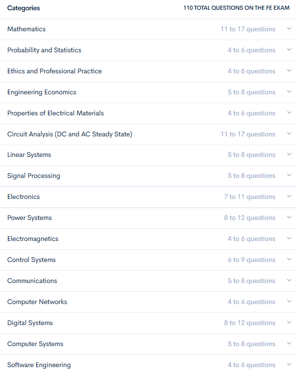
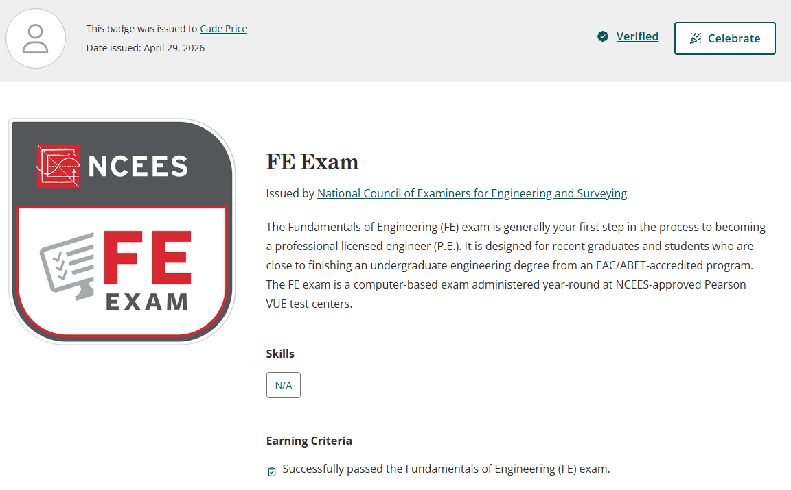

Context:
The Fundamentals of Engineering (FE) Exam is a comprehensive six-hour exam that tests the foundational knowledge expected of recent engineering graduates. Passing the FE exam is a major milestone, as it qualifies you to become an Engineer in Training (EIT), the first step towards earning a Professional Engineer (PE) license. For the FE Electrical and Computer Exam, the following concepts are tested (as of 7/2026).

Result:

Study Resources:
Below is a table containing recommended study materials for the FE Electrical and Computer Exam. I personally performed a workflow where I would review and learn concepts via ElectricalFEReview and then perform practice sets on PrepFE. I used the days before my exam to take the NCEES Official Practice Exam, a great benchmark material as it reads just as the exam would. I have also heard great things about Wasim's Course, so I would recommend it if you are willing to spend the money. Finally, the Official Reference Handbook is the most important study material. Cross-reference what you are reviewing with the handbook to become familiar with it, for it has nearly every equation required to pass the exam. I would also recommend buying a TI-36X, a cheap calculator allowed for the exam that performs similarly to the standardized TI-84. It comes with easy access to matrix calculations, vector calculations, imaginary calculations, and more.
| Resource | Purpose | Cost |
|---|---|---|
| ElectricalFEreview | Learn Concepts | Free |
| PrepFE | 500+ Practice Problems | $99.99 for 3 months |
| NCEES Official Practice Exam | Critical Benchmark | $50 |
| Wasim Course | Advised Supplementary | >$90.00 [1] |
| Official Reference Handbook | Usable During Exam | Free |
[1] His online course is significantly more expensive, but the book itself is just $90.
Study Schedule:
January and February saw me doing limited study of circuit analysis. These months were big for developing study habits. By Spring Break, I developed a comprehensive plan to begin banging out concepts. Shown below was the actuality of my studying schedule, with some weeks being more intensive than others given the priority placed on the FE in reference to other projects and activities. This schedule did result in an intense cram across April, where my whiteboard and I were thrown into asylum (my bedroom). Ultimately, the test was accomplished first try and I got to eat COCO Shrimp afterwards.
| Week of | Topics Covered [2] |
|---|---|
| 3/8 | Circuit Analysis, Probability and Statistics, Engineering Economics |
| 3/15 | Ethics |
| 3/22 | Properties of Electrical Materials |
| 3/29 | Linear Systems, Computer Networks |
| 4/5 | Signal Processing, Electronics |
| 4/12 | Computer Systems, Power Systems |
| 4/19 | Electromagnetics, Software Engineering, Digital Systems, Communications |
| 4/26 | Controls Systems, Practice Exams |
[2] Mathematics covered across all weeks.
Final Tips:
Study with intent to learn concepts. If you do not understand how a problem was solved, figure it out. Some concepts that I refused to take time to learn (convolutions and controls) showed up multiple times on the test.
Personally, having a study schedule was what really got me on track. January and February saw me free-flow through studying, which only got me through one category. Set a true schedule for yourself and understand that 100% mastery is not needed. Excel at the easier categories and be sufficient in the more challenging ones.
Know your calculator (exam-approved calculator), especially the matrix, vector, and polar/imaginary functions. This saves so much time. Hint: the "stat-vars" list function can find mean, deviation, variance, and more. Just look up how to do this on your calculator.
Do not study super hard the night before. Review some major concepts, get good sleep, and pack a healthy snack or lunch. They even let me eat outside in my break because the NCEES regulations do not say you cannot.
In the test, flag questions to return to them later. Do not spend too long trying to figure one out and run out of time for the easy ones. You can go back to flagged questions easily.
Correct answer choices are equally distributed between A, B, C, and D.